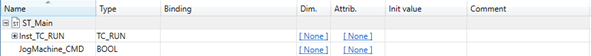
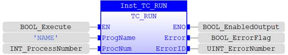
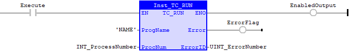

Program Function
Run a TrioBASIC program or an IEC 61131-3 Task on a given PROCESS in the multi-tasking system.
|
Execute : BOOL; |
Rising edge requests execution |
|
ProgramName : STRING; |
Name of the TrioBASIC program or IEC Task to be run. Instead of a STRING variable, a STRING literal value enclosed in single quotation (‘’) marks is also a valid input, e.g. ‘This is a text’. NOTE: this is not case sensitive, i.e. ‘PROG1’ is the same as ‘prog1’. |
|
ProcNumber : USINT; |
Process number between 0 and MaxProcess or -1 to let OS allocate the process. |
|
Done : BOOL; |
TRUE when function has completed normally |
|
Error : BOOL; |
TRUE if a program error is detected |
|
ErrorID : UINT; |
Returned error number |
When the Execute input changes from FALSE to TRUE (rising edge), the function block issues the RUN command for execution in the multi-tasking OS. The value in ProcNumber will be allocated to the program/task if available. If the process is in use, an error will be raised. Process Number -1 allows the OS to allocate the next available number automatically. The highest available number will be used.
A programming error, such as process in use, will set the Error output and return an error ID number. For the Error ID reference, see the Trio Programming error list.
Inst_TC_RUN( EN (*BOOL*) , ProgName (*STRING*) , ProcNum (*INT*) );
An IEC Task by the name ‘JOGS’ will be executed once ‘JogMachine_CMD’ is TRUE. Process number is auto allocated.
|
Text Mode |
VAR
|
|
Grid Mode |
 |
Inst_TC_RUN(JogMachine_CMD, 'JOGS' , -1 );
An IEC Task by the name ‘NAME’ will be executed once ‘BOOL_Execute’ is TRUE.

An IEC Task by the name ‘NAME’ will be executed once ‘Execute’ is TRUE.
